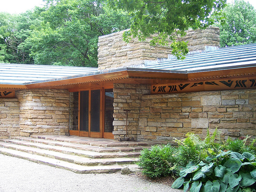
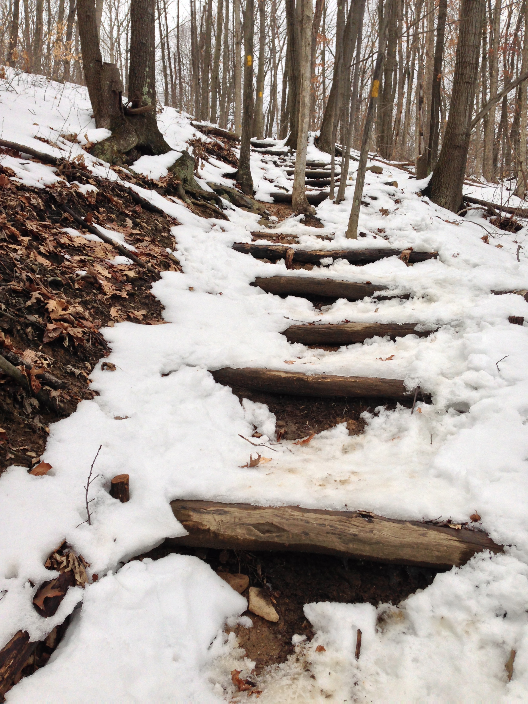

Hey here! Let me share a little about myself with you.

I work at Kentuck Knob
I have the pleasure to work at one of the beautiful buildings in the world, as an architectural guide. Kentuck Knob is a Frank Lloyd Wright designed house, which is open to the public to enjoy. Also the property is home to one of the world's finest sculpture collections. So.... if you have any nagging questions about Frank Lloyd Wright I know way too much.
I love to hike
I am so excited to explore Illinois. Well at least once we make it out of winter! Here is a photo I took on a hike on the Laural Highlands Trail in Pennsylvania.
© 2013 Joseph Shidel. All Rights Reserved.